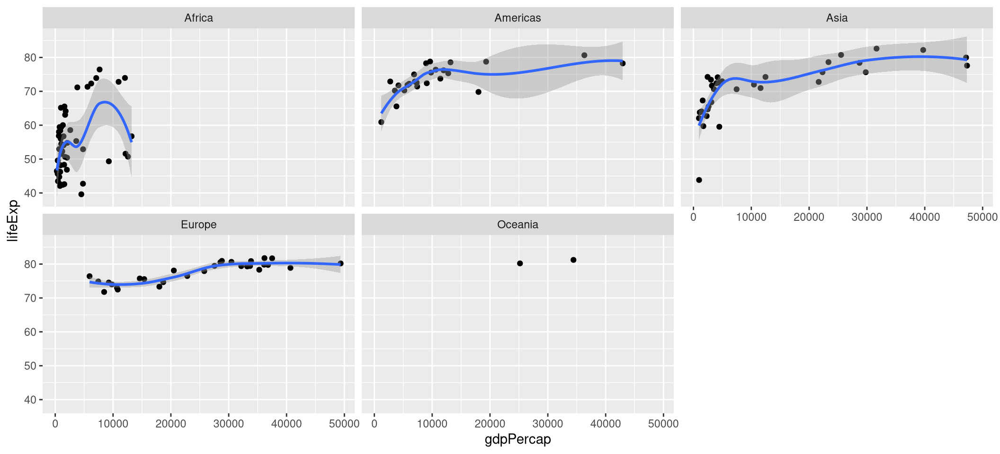

# A tibble: 1,704 × 6
country continent year lifeExp pop gdpPercap
<fct> <fct> <int> <dbl> <int> <dbl>
1 Afghanistan Asia 1952 28.8 8425333 779.
2 Afghanistan Asia 1957 30.3 9240934 821.
3 Afghanistan Asia 1962 32.0 10267083 853.
4 Afghanistan Asia 1967 34.0 11537966 836.
5 Afghanistan Asia 1972 36.1 13079460 740.
6 Afghanistan Asia 1977 38.4 14880372 786.
7 Afghanistan Asia 1982 39.9 12881816 978.
8 Afghanistan Asia 1987 40.8 13867957 852.
9 Afghanistan Asia 1992 41.7 16317921 649.
10 Afghanistan Asia 1997 41.8 22227415 635.
# ℹ 1,694 more rowsGrammar of Graphics: ggplot2 paketi
alper yilmaz
2025-05-09
Verinizi görselleştirin!

Kaynak: https://github.com/stephlocke/datasauRus
ggplot paketi
- Oldukça esnek ve güçlü
- Tutarlı (grammar of graphics)
- Aktif olarak geliştiriliyor ve geniş kullanıcı kitlesi
- En başta biraz zor ama getirisi çok
Birçok kaynak mevcut
- Official ggplot2 documentation
- Official ggplot2 documentation
- ggplot2 book
- Cookbook for R
- Data visualisation chapter in R for Data Science
- A ggplot2 Tutorial for Beautiful Plotting in R (C. Scherer)
- Data visualization: a practical introduction (K. Healy)
- Fundamentals of data visualization (C. Wilke)
Cheatsheet
Veri tidy olmalı
- Her değişkenin kendi sütunu olmalı
- Her gözlemin kendi satırı olmalı
- Her değerin kendi hücresi olmalı

Kaynak: R for Data Science book, Chapter 12 Tidy Data
Kullanılacak paket ve veri
Gapminder veri setini kullanacağız
Amaç
Gapminder sitesindeki bu görsele yakın bir görsel çizebilir miyiz?
ggplot katmanları

Scales, Geometry ve Facets arasında bir katman olarak sayılabilir.
Kaynak: Chapter 15 - Introduction to ggplot2 of EngleLab: useRguide online book.
İlk görsel
İkinci görsel / veri katmanı
Veriyi x ve y koordinatlarına eşledik ama nasıl gösterileceğini belirtmedik (point, line, box, cirlce, vs.)
Aesthetics (aes)
Değişkenleri (age, distance) grafik elemanlara (eksen, renk) eşler

Deneme
Kaynak: Fundamentals of Data Visualization, Chapter 2 Visualizing Data
geomlar
Tam liste R4DS kitabının ilgili kısmında ve data visualization cheatsheet sitesinde bulunabilir
Soru
- Sizce
geom_bar()vegeom_col()nasıl bir görsel üretir? - Eğer
geom_lines()ile çizgi çizmek istersek, veriyi yıla göre mi, ülkeye göre mi gruplamak gerekir?
İşlenmiş veri ggplot’a pipe ile iletilebilir
Note
O halde, bütün tidyverse fonksiyonları, pipe sayesinde ggplot ile birleştirilebilir!
Warning
Fonksiyonları birleştirmek için |> veya %>% kullanılırken ggplot katmanlarını birleştirmek için + kullanılır
Geom properties
Size, color, shape, width, transparency (alpha) of geoms can be either:
- set to constant value
- or, mapped to variable in our data
Change color of all points
Map color to variable
Color: to map or not to map
Not mapping
vs. mapping
Mapping more features
Let’s map color to continent and point size to population
Mapped values can be scaled (Scales layer)
Colors of discrete values are controlled by scale_color_discrete, scale_color_manual (and much more color palette packages)
Colors of continuous data is controlled by scale_color_continuous, scale_color_gradient (and much more color palette packages)
continent is discrete and lifeExp is continuous.
Let’s map color to continent and then modify the colors.
Discrete mapping scale
Continuous mapping scale
Now, let’s map color to lifeExp and then modify the colors.
Scaling of X or Y coordinates
General rule of thumb, if the range is large and large numbers skew results, use log scale. You can either use mutate and generate new column or you can use scaling functions. (Please type scale_ and then press Tab). Below, scale_x_log10() was used for scaling gdpPercap data.
Multiple geom_point layers
ggplot is very powerful and flexible. You can combine different geoms and generate unique plots. Let’s color and emphasize countries which have population greater than 100 million.
We’ll generate another data frame keeping those countries and then plot as a separate geom_point layer.

Faceting layer
Questions
- The default (and correct) option for x and y is “not free”. What happens if we have “free_x”, “free_y” and both?
- How can we have life expectancy starting from 0 (not minimum value)?
Statistical summary as layer
Theme as layer
You can customize almost all aspects of your plot with theme() function. There are theme_* functions which can modify the appearance of the plot by altering several aspects at the same time.
Let’s apply theme_classic() to our plot (result in next slide).
Theme packages
There are many theme packages which can be used to apply themes of popular resources. Let’s apply The Economist theme to your plot with single line of code
Titles
labs() function can be used to add title, subtitle and change X and Y axis labels. Below, we added the following layer
Interactive HTML output
There are many packages which can embed html compatable plots/tables to your output. The code below generates an interactive plot by plotly package. See the next slide for results.
You can hover, zoom in and out, select regions.
ggplot figures are objects
You can assign plots to an object and then re-use them. You can add a layer to an existing plot. Let’s make a plot and try different themes with it.
ggplot figures are objects
Plots as objects also help compositing figures from independent figures. Please check patchwork and cowplot packages.
Saving figures
ggsave() function is used to save the plots you generated. It can save plots in PNG, PDF, SVG formats. The resolution and size of the image can be adjusted for high quality/resolution images.
Galleries
Please check the comprehensive list of ggplot related resources at awesome-ggplot2 repo at Github.
R Graph Gallery has nicely categorized possible plots which might give an idea about what is available.
Ggplot is much more powerful than you can ever imagine. Please browse the galleries by the following users. For some users you might need to browse the individual folders.
Cédric Scherer makes professional plots with ggplot. Check out his gallery at https://github.com/z3tt/TidyTuesday (visit individual folders for R code)
Tanya Shapiro https://github.com/tashapiro/TidyTuesday
Christophe Nicault https://github.com/cnicault/tidytuesday
Georgios Karamanis https://github.com/gkaramanis/tidytuesday
Biology and bioinformatics related ggplot packages
ggbio

ggenomes